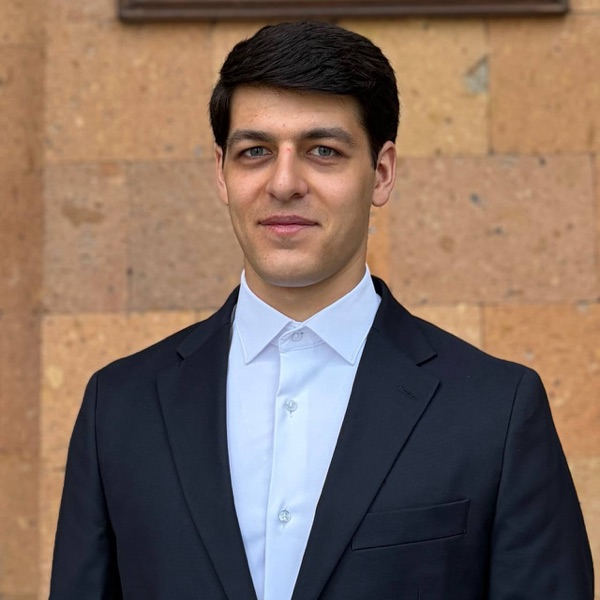

ChemLlama
Open-source molecular language models trained at YerevaNN, released in four sizes.

Machine Learning Researcher at YerevaNN
I work on language models for chemistry. My research focuses on molecular optimization, scaling laws for chemical language models, and building reliable benchmarks for drug discovery. I train the open-source ChemLlama family of molecular language models.
PMO-Dock: Benchmarking Docking, Specificity, and Generalization in Molecular Optimization
NeurIPS 2026, Evaluation & Dataset Track
Downstream Transfer of Scaling in Molecular Language Models
NeurIPS 2026, AI4DD Workshop
Open-source molecular language models trained at YerevaNN, released in four sizes.
A benchmark for molecular optimization covering docking, specificity and generalization.
Language models for molecular optimization, and how scaling transfers to downstream tasks.
B.S. in Computer Science
Thesis: Language Models for Molecular Optimization
Machine Learning and Data Science